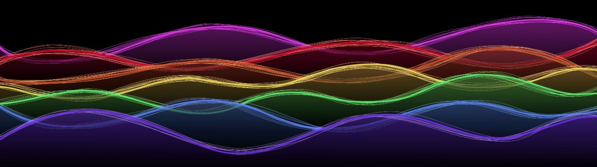
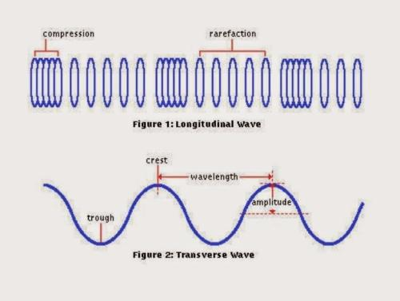

Tesla Waves

Tesla Waves are also known as scalar waves or longitudinal waves. Nikola Tesla was experimenting with scalar waves in the 1890’s and it is the access to these Tesla Waves that enables the beneficial effects of Tesla Metamorphosis to occur.

Tesla Wave
Unlike the transverse waves of electromagnetism, which move up and down perpendicularly to the direction of they are heading, Tesla waves vibrate in line with the direction of propagation. Transverse waves can be observed in water ripples: the ripples move up and down as the overall waves move outward, such that there are two actions; one moving up and down, and the other propagating in a specific direction outward.
Technically speaking, Tesla waves have magnitude but no direction, since they are imagined to be the result of two electromagnetic waves that are 180 degrees out of phase with one another, which leads to both signals being canceled out. This results in a kind of ‘pressure wave’ which radiates in all directions at once. They are a carrier of energy and information.
Mathematical physicist James Clerk Maxwell, in his original mathematical equations concerning electromagnetism, published in 1865, established the theoretical existence of Tesla waves. After his death physicists assumed these equations were meaningless, since Tesla waves had not been empirically observed and repeatedly verified among the scientific community at large.
Vibrational, or subtle energetic research, however, has helped advance our understanding of Tesla (scalar) waves. One important discovery states that there are many different types of scalar waves, not just those of the electromagnetic variety. For example, there are vital scalar waves (corresponding to vital or “qi” energy), emotional scalar waves, mental scalar waves, causal scalar waves, and so forth. In essence, as far as we are aware, all “subtle” energies are made up of various types of scalar waves.
Some general properties of scalar waves (of the beneficial kind) include:
- Travel faster than the speed of light.
- Seem to transcend space and time.
- Cause the molecular structure of water to become coherently reordered.
- Positively increase immune function in mammals.
- Are involved in the formation process in nature.
Not all scalar waves, or subtle energies, are beneficial to living systems. Electromagnetism of the 60 Hz AC variety, for example, emanates a secondary longitudinal/scalar wave that is typically detrimental to living systems. Subtle Energy Science’s energetic encoding technology and scalar-wave entrainment effectively cancel this detrimental wave and transmute it into a beneficial wave. See article at: What are Scalar Waves?
An Undetected Sea of Energy
Current scientific theories advocating the existence of “dark matter”, “dark energy”, “zero point energy” and “energy from the vacuum” have dragged Western researchers to the recognition of an undetected energy that exists throughout the universe. Tesla referred to this energy contained in so-called “empty space”, as the aether. While these same scientists deplore terms like “aether,” they’ll often freely use a term like “quantum field,” which is really just another word for the aether.
One very early instance of evidence for the presence of the aether originates from the reputable physicist Dr Hal Puthoff. He regularly points out experiments from the very early 20th century, performed prior to quantum mechanics, that were created to see if there is any type of power in the “void” of empty space.
In order to evaluate this theory, it was required to produce a location that was totally without air (a vacuum) and also lead-shielded from all recognized electromagnetic radiation using what is called a Faraday cage. This vacuum was afterward cooled to absolute zero or -273 ° C, the temperature level where all motion should cease entirely.
Dr Puthoff has called this a “seething cauldron” of power. Astonished that this power might still be discovered at absolute zero, this energetic phenomenon was called “zero point power” or ZPE, Russian researchers generally call it the “physical vacuum” or PV. These experiments showed that, contrary to the idea that the vacuum was empty, there is an incredible amount of non-electromagnetic energy in the ever present void of empty space.
Mainstream physicists Dr John Wheeler and Dr Richard Feynman estimated that the quantity of vacuum energy in the area of a solitary light bulb is sufficient to boil all the oceans of the world.
It has been theorised that this hidden energy source is in fact the unseen power that holds all matter together. If this is the case, we’re talking about an immense sea of energy from which all existence springs and returns. This would, in fact, be the very source of the “accepted” forces of electromagnetism, gravity and the strong and weak nuclear forces.
The above information is drawn from the Subtle Energy Science website. This website is an excellent resource for information and Digital Energy Medicine products both of which I highly recommend. See Subtle Energy Science.